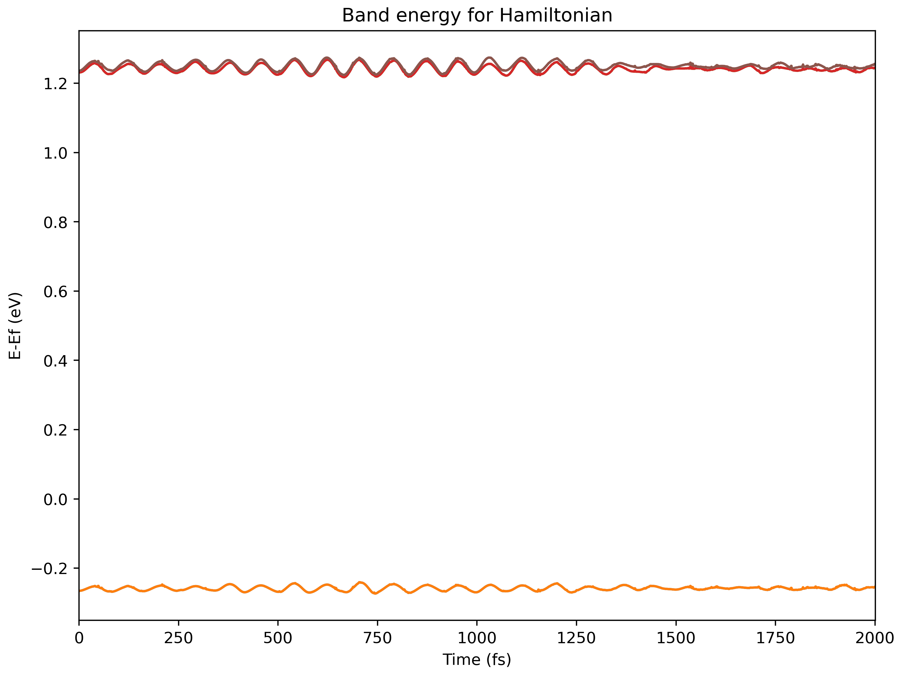
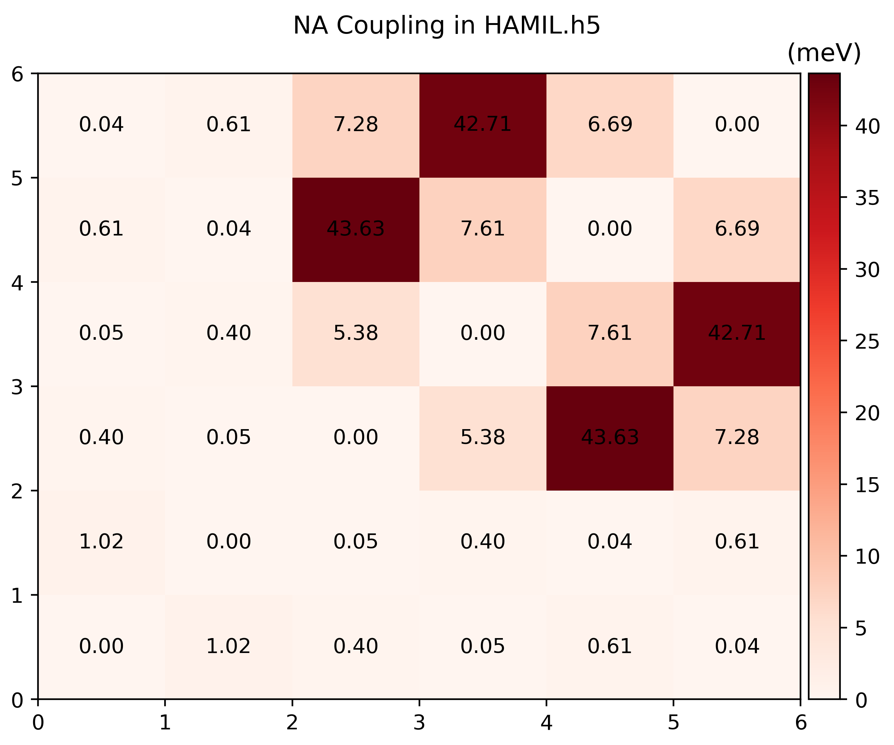

Hamiltonian
The Hamiltonian here is simply a cropped coupling of the Non-adiabatic couplings plus the external field.
The total Hamiltonian of namd_lmi consists of three parts:
\begin{equation}
\mathcal{H} = \mathcal{H}^0 + \mathcal{H}^{NAC} + \mathcal{H}^{LMI}
\end{equation}
where \(\mathcal{H}^0\) is just eigenvalues of KS orbitals and
\(\mathcal{H}^{NAC}_{jk} = -i\hbar \mathbf{D}_{jk}\) models the e-ph and
spin-orbit coupling (if LSORBIT=.TRUE. is used). The LMI term reads
\(\mathcal{H}_{jk}^{\mathrm{LMI}} = -e \frac{\mathbf{A}}{m_e} \mel{j}{\mathbf{p}}{k}\).
The vector potential term \(\mathbf{A}\) is calculated by integrating the external
electric field
\begin{equation}
\mathbf{A}(t) = - \int_0^t \mathbf{E}(t') \dd t'
\end{equation}
Help message
$ namd_lmi hamil --help
Generate the Hamiltonian from NAC according to config file
Usage: namd_lmi hamil [OPTIONS]
Options:
-c, --config <CONFIG>
Config file name.
Aliases: "cfg", "conf".
[default: hamil_config.toml]
--generate <GENERATE>
Generate auxiliary files for the calculation and analysis.
The generation of Hamiltonian will not run if this flag is set.
Alias: "gen".
Possible values:
- config-template: Generate config template for Hamiltonian generation. Aliases: "config", "cfg" and "conf"
- efield-template: Generate script template for external electric field. Aliases: "efield", "ef"
- postprocess-template: Generate post-process scripts for Hamiltonian analysis. Aliases: "post-process", "postprocess", "pp"
-h, --help
Print help (see a summary with '-h')
Procedures
-
Generate a configuration template, and an optical field description file
$ namd_lmi hamil --generate conf 2024-11-19 21:49:48 [ INFO] Global logger initialized with targets being stderr and "./globalrun.log" 2024-11-19 21:49:48 [ INFO] Writing `02_hamil_config_template.toml` ... 2024-11-19 21:49:48 [ INFO] Writing config to file "02_hamil_config_template.toml" 2024-11-19 21:49:48 [ INFO] Time used: 1.624654ms $ namd_lmi hamil --generate efield 2024-11-20 11:34:14 [ INFO] Global logger initialized with targets being stderr and "./globalrun.log" 2024-11-20 11:34:14 [ INFO] Writing `efield_template.rhai` ... 2024-11-20 11:34:14 [ INFO] Time used: 977.069µs -
Modify the Hamiltonian configuration file and optical description file
-
Hamiltonian configuration
The file
02_hamil_config.tomlshould read# NAMD-lmi config for Hamiltonian generation ikpoint = 1 basis_list = "215..220" basis_labels = ["VBM-1", "VBM", "CBM", "CBM+1", "CBM+2", "CBM+3"] nac_fname = "NAC.h5" efield_fname = "./efield.rhai" hamil_fname = "HAMIL.h5" propmethod = "Expm" scissor = 1.5 # unit: eVExplanation of each field:
-
ikpointinteger: K point index, consistent with NAC's configuration. -
basis_liststring: THIS FIELD SHOULD BE A STRING., list of bands to form the basis.- Positive one indicates the spin-up band;
- Negative one indicates the spin-down band.
- Zeros are not allowed
You can specify a consecutive bands with multiple
ranges or singletons:A
rangeis a pattern ofstart..endwhere- start and end are integers with same sign (both + or both -) - |start| <= |end| - no other characters (whitespace or any other thinds) around `..`And multiple ranges and singletons are separated with one or more whitespaces.
EXAMPLE:
- `1..4` expands to `[1, 2, 3, 4]`; - `1..1` expands to `[1]`; - `4..1` expands to empty list `[]`; - `-1..-4` expands to `[-1, -2, -3, -4]`. - `-4..-4` expands to `[-4]` - `-4..-1` expands to empty list `[]`; - Tokens like `-4..4` `1 ..3`, `0`, `-3..0`, `-3..3` are not allowed."-1..-4 1..4"expands to[-1, -2, -3, -4, 1, ,2 , 3, 4], and meaning that band 1 to 4 with spin down and band 1 to 4 with spin up form the total basis. -
basis_labelslist of strings: Labels of each band in the basis. This field is optional, or it must have the same length with expandedbasis_list. -
nac_fnamestring: File name of the pre-calculated NAC by last procedure (namd_lmi nac -c config). -
efield_fnamestring: Name of the optical field description file. If no optical field is applied, this field can be commented out. -
hamil_fnamestring: File name of output Hamiltonian. -
propmethodstring: Numerical method to solve of time-dependent Schrodinger equation (TDSE). Here are supported methods:Expm: Matrix exponentiation by Padé approximant.Exact: Matrix power by diagonalization.FiniteDifference/FD: Solve TDSE using finite difference method. This method usually requires fine time steps in the next step.LiouvilleTrotter/LT: Using Trotter formula to solve TDSE, proposed by Akimov, A. V., & Prezhdo, O. V. J. Chem. Theory Comput. 2014, 10, 2, 789–804
It should be noted that
Expm,Exactare usually slow while they have large tolerance of time step, resulting in much higher performance beyondFiniteDifference. Large time step also can be used withLiouvilleTrottermethod, while it requires the off-diagonal elements of Hamiltonian to be real, which are usually not viable for photo-excitation processes. -
scissorfloat: Scissor opeartor for the gap correction. The photo-excitation process requires a high-precision time-averaged band gap over AIMD, and this parameter can modify the gap to target value.
-
-
Optical field description
The
efield_template.rhaishould read like// // Example rhai script for ELECTRIC FIELD input // // This script uses `rhai` as the scripting language. // // For detailed usage of `rhai`, please see https://rhai.rs/book and turn to // chapter "Scripting Language". // // // Available operators: // + += // - -= // * *= // / /= // % %= (modulo operator) // ** **= (power operator, `a ** b` equals `a` raised to the `b` power) // == != // < <= // > >= // .. ..= ( .. is exclusive range, ..= is inclusive range ) // example: (1 .. 9) == (1 ..= 8) // // Detailed help: https://rhai.rs/book/language/num-op.html // // Pre-defined constants: // // - e: Euler's number, aka the base of natural logarithms // - pi: π // // Pre-defined mathematical functions: // // - trigonometric: // sin cos tan // sinh cosh tanh // asin acos atan // asinh acosh atanh // // - numerical: // sqrt(x) // exp(x) (base of E) // ln(x) (base of E) // log(x) (base of 10), or log(x, base) // // - rounding: // floor // ceiling // round // int // fraction // // - conversion: // to_degrees // to_radians // // - comparison: // min // max // // // You must define a function named `efield` with only one parameter typed with float64. // // And this function must return an array with exactly 3 float64 elements. // // This function will be evaluated from `t=0.0` to `t=namdtime*potim` (exclusive) // fn efield(t) { let hbar = 0.658212; // reduced planck constant (eV/fs) let amp = 0.005; // amplitude = 0.005 (Volt/Angstrom) let hnu = 1.4; // photon energy = h * nu = 1.4 (eV) let omega = hnu / hbar; // omega = hnu / hbar (rad/fs) let x = amp * cos(omega * t); // electric field at `x` direction at time `t` let y = amp * sin(omega * t); // electric field at `y` direction at time `t` let z = 0.0; // no electric field at `z` direction return [x, y, z]; // this statement is required. }where the contents after with
//are just comments for rhai syntax illustration.This file describes an persistent uniform \(\sigma^+\) optical field, with \(h\nu = 1.4 \mathrm{eV}\), amplitude \(A_0 = 0.005 \mathrm{V/Angstrom}\).
If you want to impose an optical pulse, an envelop function should be used before
return [x, y, z].For example, a Gaussian pulse:
fn efield(t) { let hbar = 0.658212; // reduced planck constant (eV/fs) let amp = 0.005; // amplitude = 0.005 (Volt/Angstrom) let hnu = 1.4; // photon energy = h * nu = 1.4 (eV) let omega = hnu / hbar; // omega = hnu / hbar (rad/fs) let x = amp * cos(omega * t); // electric field at `x` direction at time `t` let y = amp * sin(omega * t); // electric field at `y` direction at time `t` let z = 0.0; // no electric field at `z` direction let sigma = 1000.0; // sigma of gaussian function, in femto second let mu = 1000.0; // center of the pulse, in femto second let envelop = exp(-(t-mu)**2 / sigma**2 / 2.0); return [x * envelop, y * envelop, z * envelop]; }a sine pulse:
fn efield(t) { let hbar = 0.658212; // reduced planck constant (eV/fs) let amp = 0.005; // amplitude = 0.005 (Volt/Angstrom) let hnu = 1.4; // photon energy = h * nu = 1.4 (eV) let omega = hnu / hbar; // omega = hnu / hbar (rad/fs) let x = amp * cos(omega * t); // electric field at `x` direction at time `t` let y = amp * sin(omega * t); // electric field at `y` direction at time `t` let z = 0.0; // no electric field at `z` direction let duration = 1000.0; // Pulse duration, 1000 fs let omega_envelop = 2.0 / duration * pi; // Envelop angular frequency let envelop = if t <= duration { sin(omega_envelop*t - 0.5*pi) * 0.5 + 0.5; } else { 0.0 }; return [x*envelop, y*envelop, z*envelop]; // this statement is required. }
-
-
Generate Hamiltonian
$ namd_lmi hamil -c 02_hamil_config_template.toml 2024-11-25 11:15:53 [ INFO] Global logger initialized with targets being stderr and "./globalrun.log" 2024-11-25 11:15:53 [ INFO] +----------------------------------------------------------------------+ | | | _ _ __ __ _____ _ __ __ _____ | | | \ | | /\ | \/ || __ \ | | | \/ ||_ _| | | | \| | / \ | \ / || | | | ______ | | | \ / | | | | | | . ` | / /\ \ | |\/| || | | ||______|| | | |\/| | | | | | | |\ | / ____ \ | | | || |__| | | |____ | | | | _| |_ | | |_| \_|/_/ \_\|_| |_||_____/ |______||_| |_||_____| | | | +----------------------------------------------------------------------+ Welcome to use namd! current version: 0.1.0 git hash: NO GIT INFO author(s): Ionizing host: x86_64-unknown-linux-gnu built time: 2024-11-21 11:27:32 +08:00 2024-11-25 11:15:53 [ WARN] Field 'hamil_fname' points to an existing file and it will be overwritten. 2024-11-25 11:15:53 [ INFO] Got Hamiltonnian config: # NAMD-lmi config for Hamiltonian generation ikpoint = 1 basis_list = [215, 216, 217, 218, 219, 220] basis_labels = ["VBM-1", "VBM", "CBM", "CBM+1", "CBM+2", "CBM+3"] nac_fname = "NAC.h5" efield_fname = "./efield.rhai" hamil_fname = "HAMIL.h5" propmethod = "Expm" scissor = 1.5 2024-11-25 11:15:53 [ INFO] Got electric field from file "./efield.rhai" with content of: // // Example rhai script for ELECTRIC FIELD input // ... ... return [x, y, z]; // this statement is required. } 2024-11-25 11:15:53 [ INFO] Found Efermi = -2.824 eV, shift band eigvals to align with it ... 2024-11-25 11:15:53 [ INFO] Found scissor opeartor of 1.5000 eV. current system has gap of 1.5156 .. 1.5303 .. 1.5457 (min .. avg .. max) (eV). Now the gap is set to 1.4853 .. 1.5000 .. 1.5155 (min .. avg .. max) (eV). min(CBM_t) - max(VBM_t) = 1.4579 2024-11-25 11:15:53 [ INFO] Time used: 156.235792ms -
Visualize the Hamiltonian
Run
namd_lmi hamil --generate ppto gethamil_plot.py, and then run it to get.pngs$ namd_lmi hamil --generate pp 2024-11-20 16:07:04 [ INFO] Global logger initialized with targets being stderr and "./globalrun.log" 2024-11-20 16:07:04 [ INFO] Writing `hamil_plot.py` ... 2024-11-20 16:07:04 [ INFO] Time used: 1.868109ms $ python3 hamil_plot.py HAMIL.h5 Writing hamil_nac.png Writing hamil_pij.png 

-
Data fields of
HAMIL.h5
HDF5 "HAMIL.h5" {
GROUP "/" {
DATASET "basis_labels" {
DATATYPE H5T_STD_U8LE
DATASPACE SIMPLE { ( 31 ) / ( 31 ) }
}
DATASET "basis_list" {
DATATYPE H5T_STD_I32LE
DATASPACE SIMPLE { ( 6 ) / ( 6 ) }
}
DATASET "efield" {
DATATYPE H5T_STD_U8LE
DATASPACE SIMPLE { ( 2263 ) / ( 2263 ) }
}
DATASET "eig_t" {
DATATYPE H5T_IEEE_F64LE
DATASPACE SIMPLE { ( 1999, 6 ) / ( 1999, 6 ) }
}
DATASET "ikpoint" {
DATATYPE H5T_STD_U64LE
DATASPACE SCALAR
}
DATASET "nac_t_i" {
DATATYPE H5T_IEEE_F64LE
DATASPACE SIMPLE { ( 1999, 6, 6 ) / ( 1999, 6, 6 ) }
}
DATASET "nac_t_r" {
DATATYPE H5T_IEEE_F64LE
DATASPACE SIMPLE { ( 1999, 6, 6 ) / ( 1999, 6, 6 ) }
}
DATASET "nbasis" {
DATATYPE H5T_STD_U64LE
DATASPACE SCALAR
}
DATASET "ndigit" {
DATATYPE H5T_STD_U64LE
DATASPACE SCALAR
}
DATASET "nsw" {
DATATYPE H5T_STD_U64LE
DATASPACE SCALAR
}
DATASET "pij_t_i" {
DATATYPE H5T_IEEE_F64LE
DATASPACE SIMPLE { ( 1999, 3, 6, 6 ) / ( 1999, 3, 6, 6 ) }
}
DATASET "pij_t_r" {
DATATYPE H5T_IEEE_F64LE
DATASPACE SIMPLE { ( 1999, 3, 6, 6 ) / ( 1999, 3, 6, 6 ) }
}
DATASET "potim" {
DATATYPE H5T_IEEE_F64LE
DATASPACE SCALAR
}
DATASET "proj_t" {
DATATYPE H5T_IEEE_F64LE
DATASPACE SIMPLE { ( 1999, 6, 36, 9 ) / ( 1999, 6, 36, 9 ) }
}
DATASET "propmethod" {
DATATYPE H5T_STD_U8LE
DATASPACE SIMPLE { ( 4 ) / ( 4 ) }
}
DATASET "scissor" {
DATATYPE H5T_IEEE_F64LE
DATASPACE SCALAR
}
DATASET "temperature" {
DATATYPE H5T_IEEE_F64LE
DATASPACE SCALAR
}
}
}